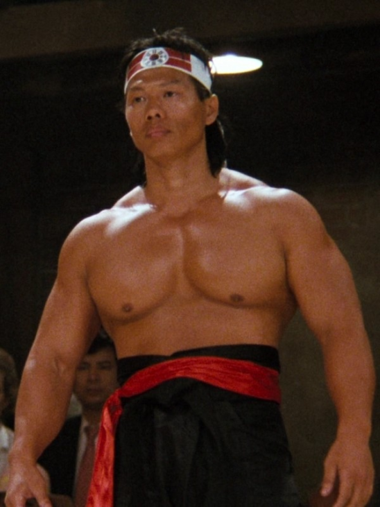

where is the source from
where is the source from"Брюс Ли дал мне шанс - я его использовал". Боло Йенг – актер, мастер тайцзи стиля Ян, десятикратный чемпион Гонконга по бодибилдингу, всех его регалий и не перечислить.
Боло Йенг (Ян Цы, кит. трад. 楊斯, упр. 杨斯, Yáng Sī ) — китайский актёр и культурист.
Ян Цы – сын бизнесмена из пригорода Гуанчжоу (европейцы раньше его называли Кантон). Будущий актер родился 3 июля 1946 года и подобно многим юным соотечественникам с юных лет занимался кунг-фу и акробатикой под руководством местных учителей. Уже на этом этапе жизни Боло Йенг проявляет индивидуальность: проявляет интерес к тяжелой физической работе (поднятие тяжестей), в отличие от большинства его сверстников, сосредоточенных лишь на технике. Развитое от тяжелых нагрузок тело позволило ему выделиться среди юных товарищей. Он всегда совмещал единоборства и силовые нагрузки, причем очень даже успешно.Его увлечение поднятием тяжестей сделало его, в конечном счете, чемпионом Китая по пауэрлифтингу.
 where did this photo come fromВ середине 60-х, избегая «светлого» коммунистического будущего или просто в поисках новых возможностей молодой спортсмен вплавь добрался из Китая в Гонконг. Даже если это всего лишь легенда – в нее очень легко поверить!На новом месте Ян начал зарабатывать преподаванием бодибилдинга и продолжал упорно тренироваться. В 70-х годах он завоевал титул «Мистер Гонконг», который удерживал 10 лет. С конца 70-х до конца 80-х он неоднократно становился чемпионом Юго-Восточной Азии по кемпо (рукопашному бою) и даже в 90-х все еще успешно участвовал в состязаниях.